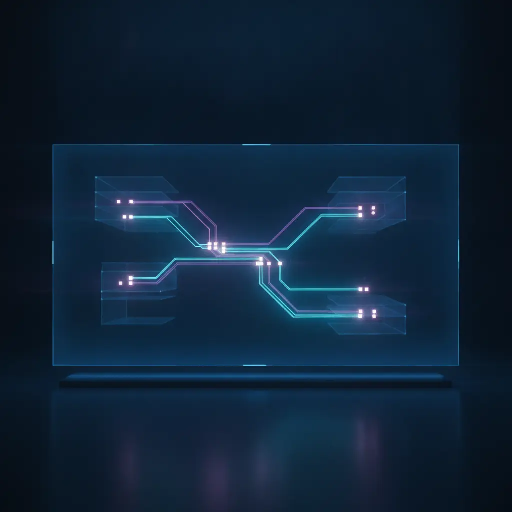

Betrieb statt Buzzword: Stabile KI-Systeme für Ihren Erfolg
Die Finaler Test GmbH entwickelt hochperformante KI-Agenten und nahtlose Prozess-Orchestrierungen. Wir verzichten auf instabile Show-Demos und bauen stattdessen wartbare, sichere und messbare Automatisierungslösungen für den geschäftlichen Alltag.
Automatisierung, die wirklich funktioniert – Tag für Tag
In einer Zeit, in der künstliche Intelligenz und Automatisierung oft als reine Marketing-Schlagworte genutzt werden, konzentriert sich die Finaler Test GmbH auf das, was wirklich zählt: den stabilen, fehlerfreien Betrieb in Ihrer täglichen Praxis.
Wir glauben nicht an kurzfristige Effekte oder instabile Prototypen, die beim ersten unerwarteten Datenformat abstürzen. Unser Anspruch ist es, digitale Brücken zu bauen, die langfristig tragen und Ihre Geschäftsprozesse spürbar entlasten.
Als spezialisierter IT-Dienstleister orchestrieren wir Ihre bestehenden Systeme, binden modernste KI-Agenten sinnvoll ein und schaffen lückenlose Datenflüsse. Dabei legen wir von der ersten Minute an größten Wert auf technische Präzision, durchdachte Fehlerlogiken und ein kontinuierliches Monitoring. So stellen wir sicher, dass Ihre Automatisierungslösungen nicht nur heute funktionieren, sondern auch morgen flexibel skalierbar bleiben.

End-to-End-Sicherheit
Jede Schnittstelle und jeder Datenfluss wird nach höchsten Sicherheitsstandards konzipiert, verschlüsselt und lückenlos überwacht, um Ihre sensiblen Unternehmensdaten optimal zu schützen.
Fehlerresistente Architektur
Integrierte Fallbacks, automatisierte Retries und intelligente Alerts verhindern Systemausfälle bei unerwarteten Datenstrukturen oder temporären API-Ausfällen von Drittanbietern.
Messbare Effizienz
Wir automatisieren nur dort, wo es einen echten, quantifizierbaren Nutzen für Ihre täglichen Arbeitsabläufe bringt. Jede Lösung wird an klaren Leistungskennzahlen (KPIs) gemessen.
Betrieb statt Buzzword
Viele Unternehmen haben bereits erste Erfahrungen mit KI-Tools gesammelt – oft mit dem Ergebnis, dass die Systeme im echten Arbeitsalltag zu unzuverlässig, ungenau oder schlicht zu instabil sind. Bei der Finaler Test GmbH gehen wir einen grundlegend anderen Weg.
Für uns ist künstliche Intelligenz kein Selbstzweck und kein bloßes Demonstrationsobjekt, sondern ein mächtiges Werkzeug, das fest in eine stabile, professionelle IT-Infrastruktur eingebettet sein muss. Wir distanzieren uns ausdrücklich von instabilen Show-Demos, die unter Laborbedingungen glänzen, aber im produktiven Betrieb bei der ersten echten Herausforderung versagen.
Unsere Lösungen zeichnen sich durch eine robuste technische Prozessarchitektur, lückenlose Fehlerlogik, strenge IT-Governance und ein umfassendes System-Monitoring (Observability) aus. Wir sorgen dafür, dass KI-Agenten sichere Leitplanken (Guardrails) erhalten und kritische Entscheidungen stets durch manuelle Freigabeprozesse (Human-in-the-Loop) abgesichert sind.
Robuste Prozessarchitektur
Wir planen und implementieren Ihre Datenströme so, dass sie auch bei extrem hoher Last und komplexen, verschachtelten API-Abfragen absolut stabil und performant laufen.
Sicherheit & Governance
Datenschutz ist für uns nicht verhandelbar. Alle Systeme werden streng DSGVO-konform und im Einklang mit Ihren internen IT-Richtlinien sowie Sicherheitsvorgaben aufgesetzt.
Lückenlose Transparenz
Durch detaillierte Audit-Trails und kontinuierliches Monitoring wissen Sie und Ihre IT-Abteilung jederzeit genau, welcher Prozess wann, wie und mit welchem Ergebnis ausgeführt wurde.
Unsere Kernkompetenzen für Ihren digitalen Vorsprung
Maßgeschneiderte Lösungen von der Prozess-Orchestrierung bis zur produktiven KI-Integration.
Prozess-Orchestrierung
Wir bauen End-to-end Automationen, die Ihre Geschäftsprozesse nahtlos miteinander verbinden. Durch integrierte Fehlerbehandlung (Retries & Alerts), den Schutz vor Dubletten (Idempotenz) und eine lückenlose Historie (Audit-Trail) schaffen wir hochzuverlässige Systeme, auf die Sie sich im täglichen Betrieb blind verlassen können.
- Automatisierte Fehlerbehandlung & Alerting
- Schutz vor Dubletten (Idempotenz)
- Lückenlose Prozesshistorie (Audit-Trail)
KI in produktiven Abläufen
Wir betten KI-Agenten und intelligente Assistenten so in Ihre Abläufe ein, dass sie einen echten, messbaren Mehrwert stiften. Ob Klassifizierung von Dokumenten, Priorisierung von Anfragen oder automatisierte Vorschlagserstellung – abgesichert durch Kontrollpunkte (Guardrails), manuelle Freigabeprozesse und technische Fallbacks bleibt die Kontrolle stets bei Ihnen.
- Smarte Klassifizierung & Priorisierung
- Etablierte Guardrails & Fallbacks
- Human-in-the-Loop Freigaben
Daten, APIs und Betrieb
Wir verknüpfen Ihre bestehenden Drittsysteme wie CRM, ERP, DMS, Microsoft 365 oder Google-Dienste sowie individuelle APIs. Durch präzise Datenvalidierung, exaktes Feld-Mapping und kontinuierliches Monitoring sorgen wir für einen reibungslosen, dauerhaften und verlustfreien Datenaustausch über alle Systemgrenzen hinweg.
- Nahtlose Drittsystem-Anbindung
- Präzise Datenvalidierung & Mapping
- Kontinuierliches API-Monitoring
Ergänzende Angebote & Referenzen
Neben individuellen Entwicklungen bieten wir strategisches Consulting, praxisnahe Tagesworkshops und bereits erprobte Referenz-Systeme. Dazu gehören unter anderem unser Website-Generator, der LV-Analysator, das Bauvorhaben-Radar, intelligente Voice Agents und automatisierte Medien-Publisher für moderne Redaktionen.
- Strategisches IT-Consulting
- Praxisnahe Tagesworkshops
- Erprobte, anpassbare Referenz-Systeme
In drei Schritten zu stabilen Automatisierungslösungen
Unser strukturierter Prozess sichert minimale Risiken, transparente Kosten und maximale Ergebnisse.
Process Scan
Wir analysieren Ihren Ist-Zustand, bestehende Datenflüsse, potenzielle Risiken und Engpässe in Ihren Abläufen. Auf dieser Basis erstellen wir eine priorisierte Roadmap, die Ihnen genau zeigt, wo Automatisierung den größten Hebel hat und wie die technische Umsetzung aussehen sollte.
MVP in 2–4 Wochen
Keine monatelangen, theoretischen Konzeptphasen ohne greifbare Ergebnisse. Wir stellen Ihnen innerhalb von zwei bis vier Wochen ein erstes, voll dokumentiertes und betriebsfertiges Produktivmodul (Minimum Viable Product) zur Verfügung, das sofort echten Nutzen stiftet.
Betrieb & Ausbau
Nach dem erfolgreichen Start begleiten wir Sie beim kontinuierlichen Betrieb. Wir erweitern das System iterativ, richten ein professionelles KPI-Monitoring sowie automatisiertes Alerting ein und erstellen detaillierte Runbooks für Ihre interne IT-Abteilung.
Warum die Finaler Test GmbH Ihr richtiger Partner ist
Wir verbinden tiefes technisches Verständnis mit kompromissloser Betriebssicherheit und Transparenz.
Fokus auf echte Betriebssicherheit
Während andere noch über theoretische Potenziale sprechen, sorgen wir für den stabilen Betrieb im harten Alltag. Unsere Systeme sind so konzipiert, dass sie Ausfälle proaktiv verhindern und Fehler selbstständig abfangen, bevor sie Ihren Betriebsablauf stören können.
Schnittstellen-Kompetenz
Wir beherrschen die nahtlose Integration unterschiedlichster Software-Landschaften. Egal ob moderne Cloud-APIs oder ältere Legacy-Systeme – wir finden einen sicheren, performanten Weg, Ihre Daten fehlerfrei fließen zu lassen und Medienbrüche komplett aufzulösen.
Transparente Dokumentation
Wir hinterlassen keine Blackboxes, die nur von uns gewartet werden können. Jede von uns entwickelte Automatisierung wird lückenlos dokumentiert. Sie erhalten klare Runbooks, sodass Ihre eigene IT-Abteilung die Systeme jederzeit verstehen, anpassen und verwalten kann.
Zwei starke Standorte
Mit unserem Hauptsitz in Braunschweig und einem weiteren Standort in Balaclva, Mauritius, vereinen wir regionale Nähe, deutsche Ingenieurspräzision und höchste Qualitätsstandards mit internationaler Flexibilität und einer globalen Perspektive für moderne IT-Projekte.
Technologien & Standards für zukunftssichere Systeme
Unser Tech-Stack ist konsequent auf maximale Zuverlässigkeit, Performance und Wartbarkeit ausgelegt.
Wir nutzen modernste Frameworks zur Prozess-Orchestrierung, sichere API-Schnittstellen und etablierte Cloud-Infrastrukturen. Dabei achten wir streng darauf, dass keine Abhängigkeiten von einzelnen Anbietern (Vendor Lock-in) entstehen und Ihre Datenhoheit stets vollständig gewahrt bleibt. Jede Zeile Code und jede Systemkonfiguration entspricht den aktuellen Best Practices der Softwareentwicklung, um eine langfristige Wartbarkeit und einfache Skalierbarkeit zu garantieren.
Bereit für Automatisierung ohne Kompromisse?
Lassen Sie uns gemeinsam die Engpässe in Ihren Prozessen identifizieren und dauerhaft lösen.
Vereinbaren Sie jetzt Ihren unverbindlichen Process Scan. In einem ersten, strukturierten Gespräch analysieren wir Ihre aktuellen Abläufe und zeigen Ihnen konkrete, machbare Wege auf, wie Sie durch stabile KI-Systeme und automatisierte Prozesse wertvolle Zeit und Ressourcen einsparen können.